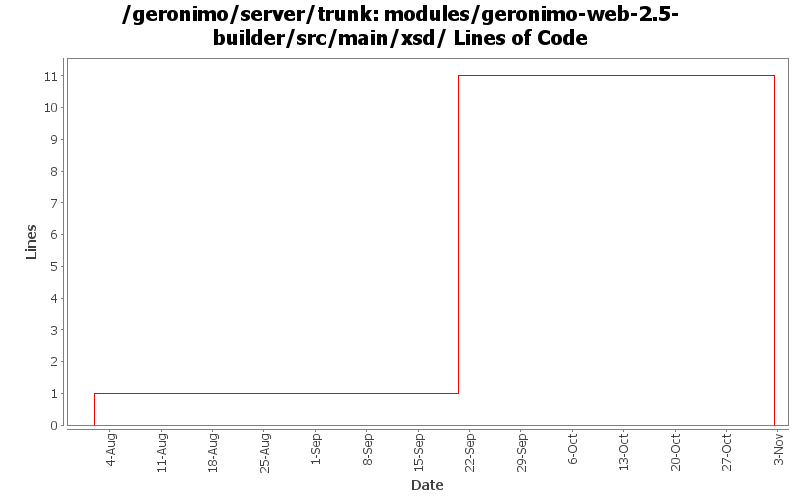

[root]/modules/geronimo-web-2.5-builder/src/main/xsd

| Author | Changes | Lines of Code | Lines per Change |
|---|---|---|---|
| Totals | 10 (100.0%) | 12 (100.0%) | 1.2 |
| vamsic007 | 2 (20.0%) | 10 (83.3%) | 5.0 |
| gawor | 1 (10.0%) | 1 (8.3%) | 1.0 |
| djencks | 3 (30.0%) | 1 (8.3%) | 0.3 |
| prasad | 4 (40.0%) | 0 (0.0%) | 0.0 |
GERONIMO-3565. Modules distributed amongst framework/modules and plugins
0 lines of code changed in 4 files:
GERONIMO-2964 Cannot specify the Tomcat work directory for a web application
o Renamed the schemas that changed
0 lines of code changed in 1 file:
GERONIMO-2964 Cannot specify the Tomcat work directory for a web application
o Committing GERONIMO-2964-trunk.patch submitted in the JIRA
o geronimo-web.xml can now have a "work-dir" tag to specify the work directory to be used by the application.
o For Tomcat this work directory will be relative to "catalina.home"
o For Jetty this work directory will be relative to jetty home which is var/jetty by default.
10 lines of code changed in 1 file:
fix schemaLocation for persistence xsd
1 lines of code changed in 1 file:
GERONIMO-2286 GERONIMO-1874 GERONIMO-3140 Adjust schema versions for schemas importing new schema versions
1 lines of code changed in 1 file:
GERONIMO-2286 GERONIMO-1874 GERONIMO-3140 Use patterns for external-rar in app client plans and external-path in ear plan external modules. Allow partial artifacts and use an ArtifactResolver to fill in the missing bits. Use client_artifact_aliases.properties in the app client builder to help avoid using server side modules when client side modules are intended for runtime. This is not backward compatible for apps using external-rar or external-path.
0 lines of code changed in 2 files: